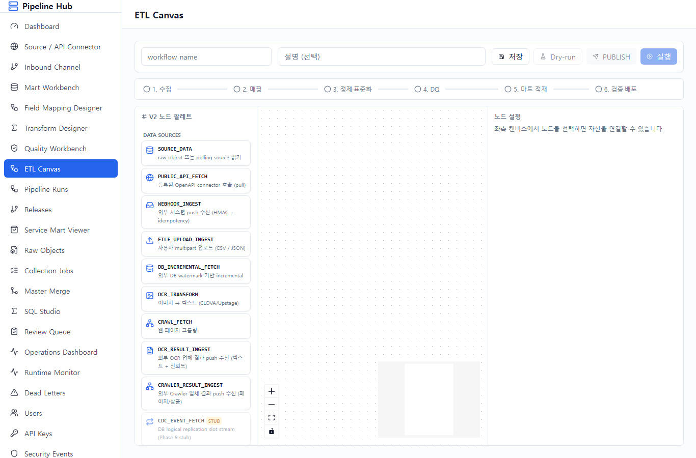
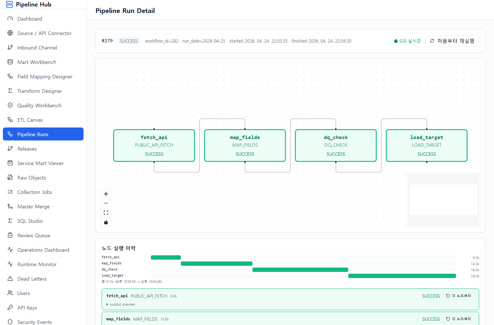
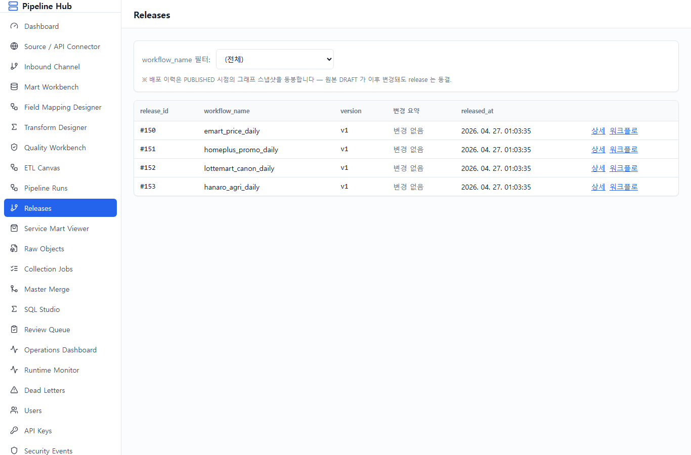
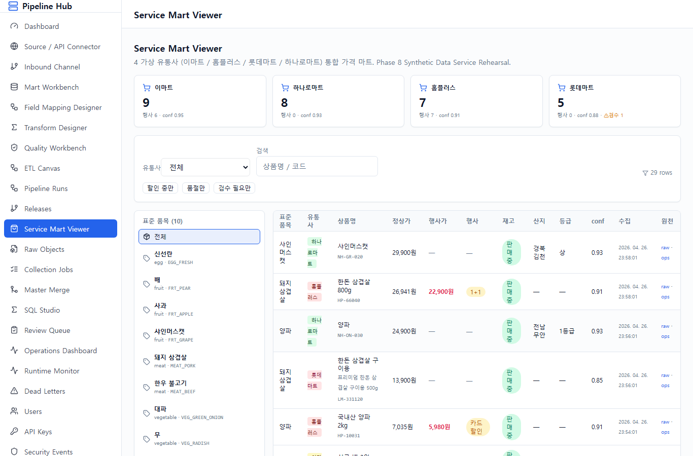
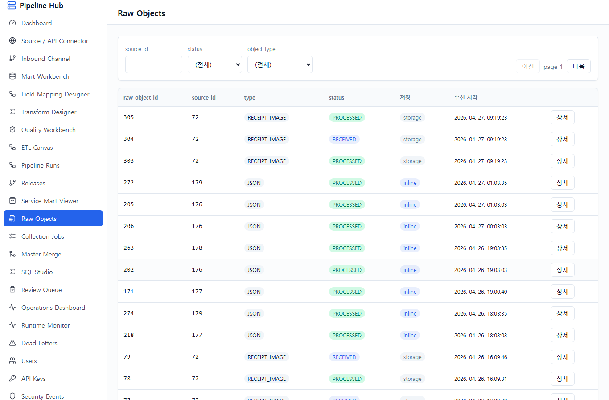
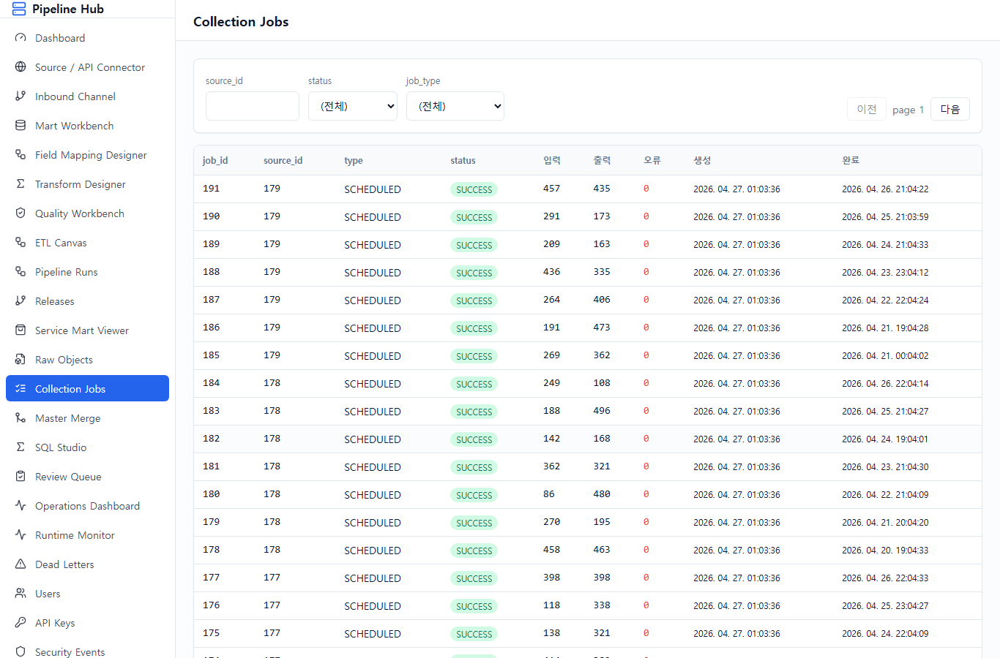
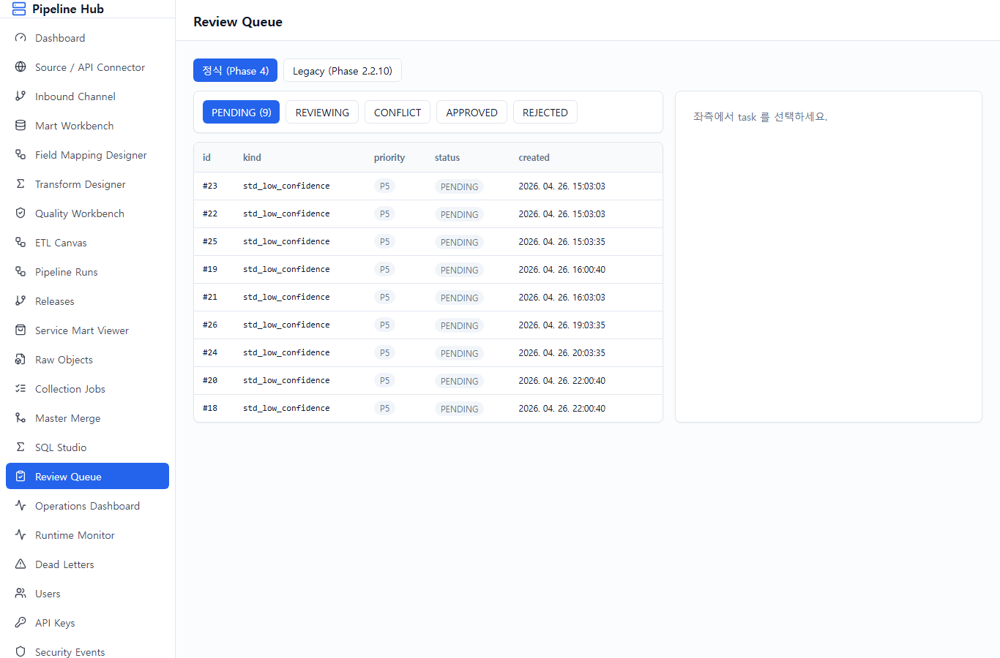
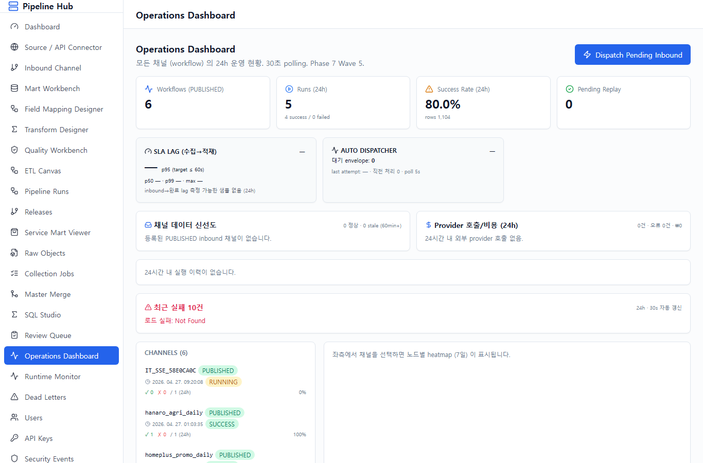

본 매뉴얼은 공용 데이터 수집 파이프라인 플랫폼 의 *시나리오 리허설* 화면별
절차서다. 4 가상 유통사 (이마트 / 홈플러스 / 롯데마트 / 하나로마트) 의 가격·행사·재고
데이터를 수집·표준화·통합하는 전체 과정을 메뉴 순서로 정리한다.
Phase 진행 상태 (2026-04-27 기준):
| Phase | 핵심 변경 |
|---|---|
| Phase 8 | 4 유통사 + service_mart 통합 시드 (Synthetic Rehearsal) |
| Phase 8.1 | E2E hardening + Inbound 자동 dispatcher |
| Phase 8.2 | Deep UX — Mart/DQ 템플릿, 자산 상태 배지, JSON path picker, 가격 추이 차트 등 8 영역 |
| Phase 8.3 | DB cleanup — iot_spike_mart / ctl.connector / expired_at 제거 (migration 0052) |
| Phase 8.4 | Final Polish — NodePalette 누락 노드, Inbound API Key 인증, 최근 실패 패널 등 9 영역 |
| Phase 8.5 | Real Operation — SLA Lag, Data Freshness, System Alert, Provider Cost (96~98% 완성도) |
대상 독자: 운영자 / 데이터 매니저 / 시연 참관자.
전제: 개발자 도움 없이 화면만으로 새 채널 추가, 장애 대응이 가능해야 함.
# Docker — Postgres / Redis / MinIO
cd infra && docker-compose up -d
# Backend — http://127.0.0.1:8000 (Phase 8.5: alert_loop + inbound_dispatcher 자동 가동)
cd backend
.venv/Scripts/alembic.exe upgrade head # head = 0053
.venv/Scripts/python.exe -c "import asyncio, sys; \
asyncio.set_event_loop_policy(asyncio.WindowsSelectorEventLoopPolicy()); \
import uvicorn; uvicorn.run('app.main:create_app', factory=True, host='127.0.0.1', port=8000)"
# Frontend — http://127.0.0.1:5173
cd frontend && pnpm dev
# Phase 8 데이터 시드 (2 단계)
cd backend
PYTHONIOENCODING=utf-8 PYTHONPATH=. .venv/Scripts/python.exe ../scripts/phase8_seed_synthetic_data.py
PYTHONIOENCODING=utf-8 PYTHONPATH=. .venv/Scripts/python.exe ../scripts/phase8_seed_full_e2e.py| 가상 유통사 | 도메인 코드 | 시연 특징 |
|---|---|---|
| 이마트 | emart | 표준 API 형 — 정상 케이스 대표 |
| 홈플러스 | homeplus | 행사·할인 데이터 풍부 |
| 롯데마트 | lottemart | 상품명 정규화 난이도 높음 (low confidence) |
| 하나로마트 | hanaro | 농축수산물 산지/등급/단위 풍부 |
inbound_dispatcher_loop 가 main.py lifespan 에서 5초마다 RECEIVED envelope 자동 처리 (Wave 6).alert_evaluation_loop 가 5분마다 3 rules 평가 (failure_rate / SLA lag / channel stale) — Slack webhook (env ALERT_SLACK_WEBHOOK_URL) 또는 log fallback.
기능: ID / 비밀번호 입력 후 JWT 발급. 권한 (ADMIN / APPROVER / OPERATOR /
REVIEWER) 에 따라 메뉴 노출.
시나리오 적용: admin / admin (Phase 8 시드 기본 계정).
다음 스텝: 로그인 성공 시 Dashboard 자동 진입.

기능: 시스템 전반 현황 한 눈에 보기. 활성 소스 / 오늘 수집 작업 / 성공·실패 카운트 + 최근 실패 5건.
시나리오 적용: 4 유통사 + service_mart 의 통합 운영 상태 첫 진입 시 확인. 실패가 있으면 즉시 Operations Dashboard 로 이동.
다음 스텝: 좌측 메뉴 "Source / API Connector" 클릭 → 4 유통사 API 등록 확인.

기능: OpenAPI 형 외부 데이터 소스 등록. Phase 8.4 에서 URL 자동 파싱 추가 — endpoint_url 에 query string 이 있으면 params 폼으로 자동 분리.
시나리오 적용: 이마트 / 홈플러스 / 롯데마트 / 하나로마트 4 connector 가 PUBLISHED 상태로 시드되어 있음. 신규 추가 시 [+] 버튼 → URL 입력 → 자동 파싱 → Auth 설정 → 저장.
다음 스텝: 외부 push 채널이 필요하면 Inbound Channel 등록 (단방향 push 수신).

기능: 외부 OCR/크롤러/소상공인 업로드 등 *push* 트래픽 수신 채널 정의.
hmac_sha256 (Stripe 패턴) - api_key (Phase 8.4 신규) — X-API-Key 헤더 + secret_ref env 매칭 - mtls (Phase 9)시나리오 적용: vendor_a_crawler / ocr_partner_b / smb_uploads 3 채널이 시드되어 있음. 외부 업체 추가 시 채널 코드 / domain / channel_kind / auth_method / secret_ref 입력.
다음 스텝: 수집된 데이터를 적재할 mart 가 없으면 Mart Workbench 에서 정의.

기능: 마트 테이블 DDL 시각 설계 + DRAFT/REVIEW/APPROVED/PUBLISHED 라이프사이클.
price_fact, product_master, stock_snapshot, promo_fact — PK/partition/index/load_mode 일괄 적용.시나리오 적용: 4 유통사 mart schema (emart_mart / homeplus_mart / ...) 가 이미 PUBLISHED. 신규 컬럼 추가 시 템플릿 → 컬럼 추가 → DDL 미리보기 → DRAFT 저장 → APPROVE → PUBLISH.
다음 스텝: 외부 응답을 mart 컬럼으로 매핑하기 위해 Field Mapping Designer.

기능: 외부 JSON/XML 응답의 source_path → target_column 매핑 + 변환 함수 (26+ allowlist) 적용.
source_path + 추천 변환 함수 자동 입력. price → number.parse_decimal, regday → date.normalize_ymd 같은 키 힌트 기반.시나리오 적용: 이마트 응답 items[].price → mart.product_price.unit_price 매핑 시드 완료. 신규 매핑 추가 시 [+] → 샘플 JSON 붙여넣기 → tree 클릭 → 변환 함수 자동 추천.
다음 스텝: 단순 매핑 외 SQL 기반 변환은 Transform Designer.

기능: SQL 자산 (sql_asset) 등록 — DRAFT → APPROVED → PUBLISHED 라이프사이클로 운영 중인 SQL 만 노드에서 사용 가능. version 관리.
시나리오 적용: service_mart_unified_query (4 유통사 통합) sql_asset 이 PUBLISHED. 신규 추가 시 SQL 작성 → Dry-run → APPROVE → PUBLISH.
다음 스텝: 적재 전 데이터 품질 룰을 Quality Workbench 에서 정의.

기능: DQ rule (필수값 / 이상값 / 기간 / 중복 / freshness / anomaly_zscore / drift) 정의 + 실행 결과 조회.
시나리오 적용: service_mart.product_price.row_count_min (최소 1행) + freshness max_age_minutes=1440 (24h 내 데이터 도착) 시드. 신규 추가 시 카테고리 선택 → 템플릿 클릭 → SQL 자동 생성 → 저장.
다음 스텝: 자산 (Source / Mapping / SQL / DQ / Mart) 들을 조립하여 ETL Canvas 에 워크플로 정의.

기능: 등록된 자산 박스를 끌어다 놓고 edge 로 연결하여 코딩 0줄 로 워크플로 완성.
SOURCE_DATA, PUBLIC_API_FETCH, WEBHOOK_INGEST, FILE_UPLOAD_INGEST, DB_INCREMENTAL_FETCH, OCR_TRANSFORM, OCR_RESULT_INGEST, CRAWL_FETCH, CRAWLER_RESULT_INGEST (Phase 8.4 노출), CDC_EVENT_FETCH STUB (Phase 9 정식 구현), MAP_FIELDS, SQL_INLINE_TRANSFORM, SQL_ASSET_TRANSFORM, HTTP_TRANSFORM, FUNCTION_TRANSFORM, STANDARDIZE, DEDUP, DQ_CHECK, LOAD_TARGET, NOTIFY.시나리오 적용: emart_price_daily 워크플로 = PUBLIC_API_FETCH → MAP_FIELDS → DQ_CHECK → LOAD_TARGET 4 박스. Pipeline Runs 화면의 [보기] 버튼으로 진입 시 ETL Canvas V2 에서 그대로 보임.
다음 스텝: 작성한 워크플로의 실행 이력은 Pipeline Runs.

기능: 워크플로 목록 + 최근 실행 이력. 각 워크플로의 [보기] 버튼은 Phase 8.5 에서 v2 ETL Canvas 로 라우팅 수정 됨 (이전 버그: v1 designer 로 갔음).
시나리오 적용: emart/homeplus/lottemart/hanaro/service_mart_unification 5 워크플로 + 최근 SUCCESS 4건씩.
다음 스텝: 특정 run 의 상세 흐름은 Pipeline Run Detail.

기능 (Phase 8.5 ⑥):
시나리오 적용: homeplus_promo_daily run #279 (SUCCESS, 51초) — fetch_api(5s) → map_fields(12s) → dq_check(16s) → load_target(18s). 운영자가 lag 가 큰 노드를 timeline 으로 즉시 식별.
다음 스텝: 운영 환경 배포 이력은 Releases.

기능: PUBLISHED 워크플로 release 이력 + 환경 배포 추적. 각 release 에서 [워크플로] 버튼은 v2 ETL Canvas 로 진입 (Phase 8.5 라우팅 수정).
시나리오 적용: 4 유통사 + service_mart 통합 워크플로 release 5건 시드.
다음 스텝: 적재된 통합 가격은 Service Mart Viewer.

기능 (Phase 8.4 보강): 4 유통사 통합 가격 (service_mart.product_price) 조회 + 시연용 인터랙션.
시나리오 적용: 사과 1.5kg 표준품목 클릭 → 이마트(12,900원) vs 홈플러스(11,900원 행사가) vs 롯데마트(13,500원) vs 하나로마트(10,800원) 비교 → 「할인 중만」 토글 → 행사 상품만 노출.
다음 스텝: 원천 데이터 추적은 Raw Objects.

기능: 외부 응답을 그대로 보존한 raw_object 목록. content_hash 로 중복 방지, partition_date 로 파티션 분리.
시나리오 적용: 4 유통사 raw_object 127건 시드. 운영자가 적재 결과가 의심될 때 채널별 raw 응답 원본 확인.
다음 스텝: 시스템이 자동 실행한 작업 이력은 Collection Jobs.

기능: schedule_cron 또는 manual trigger 로 실행된 ingest_job 이력.
시나리오 적용: 4 유통사 ingest_job 28건 + 의도적 FAILED 케이스 1건 시드 (운영자 발견·복구 시연용).
다음 스텝: 표준화 confidence 가 낮아 자동 표준코드 결정이 어려운 항목은 Review Queue.

기능: crowd.task 의 std_low_confidence task 검수 — 검수자가 표준코드를 직접 선택하여 보정.
시나리오 적용: 롯데마트의 low confidence 매핑 3+ 건 시드 (삼겹살 600g 등심 같은 모호한 상품명). 검수 → 표준코드 결정 → 매핑 보정 → 다음 run 부터 자동 적용.
다음 스텝: 운영자가 시스템 전체 상태를 한 화면에서 보는 곳은 Operations Dashboard.

기능: 본 매뉴얼의 *운영 핵심*. Phase 8 ~ 8.5 보강이 모두 모인 화면.
recharts BarChart — success/failed 누적 막대.
실패 노드 + 원천 (raw_object / inbound_envelope) 링크 + 재실행 버튼. 30s 자동 갱신.
node_type 별 실패 카테고리 (외부 API 실패 / Inbound 수신 실패 / DQ 실패 / 마트 적재 실패 등).
6 워크플로 (시드 4 유통사 + service_mart 통합 + IT 테스트) 의 24h 카운트 / 성공률 / 마지막 run 시각. 클릭 시 우측에 노드별 7일 heatmap 노출.
failure_rate_24h (workflow 실패율 30% 초과, ERROR, 30분 cooldown) - sla_lag_p95 (p95 lag > 180s, WARN, 15분 cooldown) - channel_stale (60min 이상 inbound 미수신, WARN, 60분 cooldown)ALERT_SLACK_WEBHOOK_URL) 또는 log fallback.audit.alert_log 에 적재.시나리오 적용: 운영자가 출근 시 본 화면 1개로 전체 상태 파악.
다음 스텝: 시연 종료. 본 매뉴얼은 모든 메뉴를 한 바퀴 돌아온 시점.
| 단계 | 완성도 | 주요 산출 |
|---|---|---|
| Phase 8 | 80~82% | 4 유통사 시드 + service_mart |
| Phase 8.1 | 84~85% | E2E hardening + auto dispatcher |
| Phase 8.2 | 87~88% | Deep UX 8 영역 (템플릿 / picker / 차트 / 배지) |
| Phase 8.3 | 88~89% | DB cleanup (iot_spike / connector / expired_at) |
| Phase 8.4 | 93~95% | Final Polish 9 영역 (NodePalette / API Key / 운영 UX) |
| Phase 8.5 | 96~98% | Real Operation (SLA / Freshness / Alert / Cost) |
# backend (port 8000) + frontend dev (port 5173) 가동 + Phase 8 seed 적용 상태에서
cd frontend
node scripts/capture_manual_screenshots.mjs
# 특정 run_id 로 detail 스크린샷 재촬영 (기본 279)
MANUAL_RUN_ID=279 node scripts/capture_manual_screenshots.mjs스크립트는 docs/manual/screenshots/*.png 17장을 덮어쓴다.